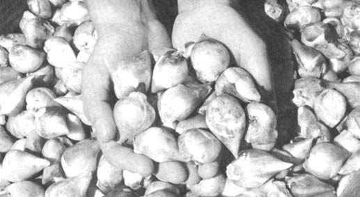

PHOTOS BY J.F. MICHAJLUK
Every fall we plant thousands of bulblets five to seven across in trenches. Although this phase of tulip growing is the most tedious and hardest on back and leg muscles, it's very important . . . for most of the bulbs we sell develop from such sets.